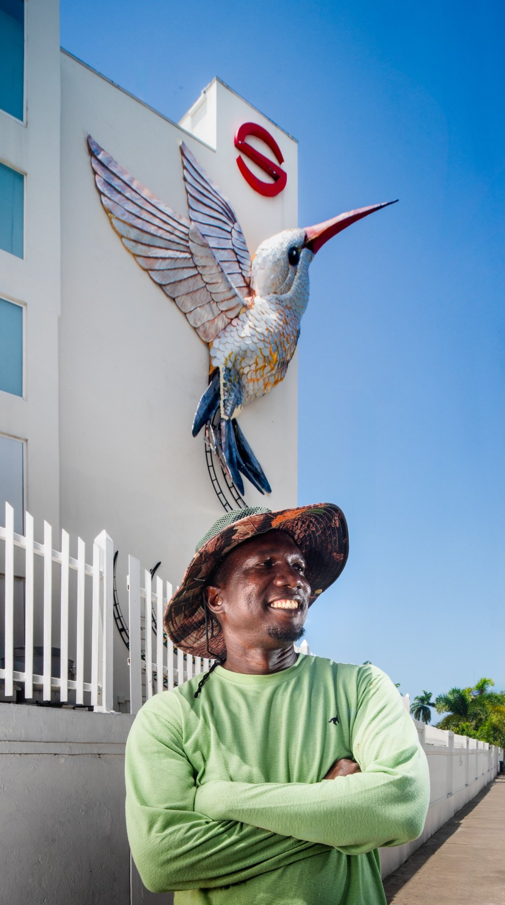
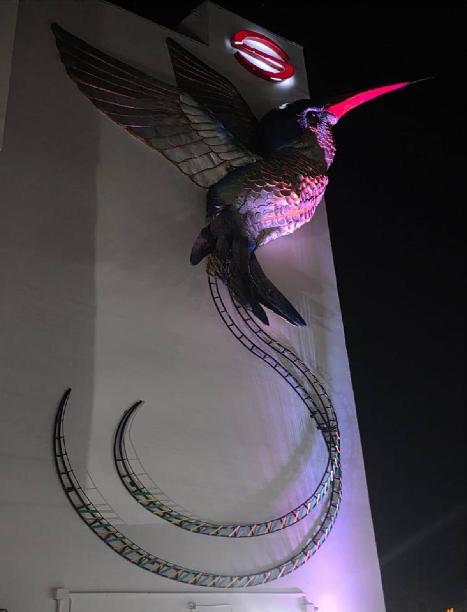

Hospitality · Monumental Sculpture · Montego Bay, Jamaica
Doctor
Bird.
A 46-foot streamer-tail hummingbird created for the façade of S Hotel Montego Bay — transforming Jamaica's national bird into a landmark visible from Jimmy Cliff Boulevard.
The project
Movement at
monumental scale.
Originally explored as a flatter wall treatment, the concept developed into a dynamic three-dimensional bird that appears alive in space. Its scale required the sculpture to be fabricated outdoors in eight separate sections.
The finished work combines fibreglass, polystyrene foam and sheet metal, bringing sculptural expression and complex engineering together in a single architectural installation.
Project story
Behind
the work.
Explore the meaning of the Doctor Bird, its place in Montego Bay and the design and fabrication behind the sculpture.
The meaning
A national symbol.
A new landmark.
The Doctor Bird is Jamaica’s national bird, recognised for its distinctive long tail and movement. Enlarged into a 46-foot sculpture, this familiar symbol of the island’s natural heritage takes on a new presence in the city.
Set against the façade of S Hotel in Montego Bay, the work brings Jamaican identity into the public streetscape, offering residents and visitors a landmark rooted in the place it represents.
Design &
fabrication.
Built outdoors in eight separate sections, the 46-foot sculpture took three months to complete. Its hollow interior contains a ladder leading up to the head.
Explore the process




Design & fabrication
Making the bird
take flight.
From a wall relief to a bird in motion
The commission began with hotelier Christopher Issa’s ambition to create a distinctive feature for S Hotel’s façade. Initially imagined as a flat relief mural, the idea evolved into a three-dimensional sculpture. Cole moved away from the familiar side-on depiction of the Doctor Bird, shaping its pose to suggest movement and the presence of a bird suspended in space.
Eight sections, built outdoors
The sculpture took approximately three months to complete. With no workshop large enough to accommodate the entire 46-foot piece, Cole constructed it in eight separate sections. All of the fabrication took place outdoors, making daily exposure to the weather part of the challenge.
Fibreglass, polystyrene foam and sheet metal were brought together in a work that demanded both sculptural judgement and complex engineering. The photographs of installation reveal the scale of the task as the sections became part of the hotel façade.
Inside the sculpture
The bird is hollow. In the published account of the project, its interior is described as large enough to accommodate ten people, with a ladder leading up to the head. This hidden scale adds another dimension to a sculpture usually experienced from the street below.
Showing what can be made in Jamaica
For Cole, the project also carried a personal purpose. He recalls being told in a high-end jewellery shop that Jamaican-made souvenirs were not stocked because their quality was considered inadequate. The experience stayed with him and strengthened his determination to create work in Jamaica that could stand alongside international examples.
He places the Doctor Bird within that continuing effort, recalling the scepticism he had also encountered over whether an ambitious airport welcome sign could be built.
“Every major project I do is like a mission to prove what’s possible right here in Jamaica.”
Scheed Cole, speaking to The Sunday Gleaner
Project account adapted from Janet Silvera’s “Doctor Bird sculpture soars at S Hotel”, 10 August 2025.
Next project